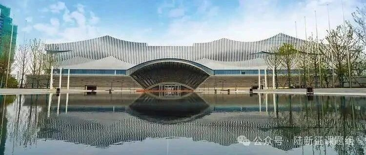

转载 | 中国力学大会-2025分会场“结构智能设计与优化”摘要投稿征集
中国力学大会-2025定于2025年7月18~21日在长沙国际会议中心召开，中国力学学会结构工程专业委员会组织了分会场“S14 结构智能设计与优化”，分会场旨在交流结构工程及工程力学领域近年来基于深度学习、生成式人工智能、智能优化算法的结构智能设计与优化方面的学术成果，促进结构工程结合智能化技术的进步与发展，加强力学、结构工程、以及人工智能技术的相互渗透与共同提高。
一、征文范围
结构工程及工程力学是一个覆盖面极广的领域，它涉及土木建筑、水工港工、铁路公路、桥梁隧道、机械化工、车辆船舶、航空航天、国防能源、防灾减灾等众多行业，前沿人工智能技术包括深度学习、生成式人工智能、大语言模型等系列技术。我们热诚欢迎从事结构工程、工程力学、以及人工智能交叉研究方向的专家学者踊跃投稿。
二、投稿要求
摘要模板请参见附件1，相关文件可以点击“阅读原文”或通过以下链接下载：
https://yunpan.swjtu.edu.cn/link/AAB28E3B1F43014117A51F907F48D531E5
三、投稿提交的材料
向[email protected]发送一份按照附件1编写的摘要Word文件，邮件主题为“2025分会场结构智能设计与优化摘要”。
四、截稿日期
2025年4月15日。
五、论文审查
提交的论文将经过下面两项审查以决定是否录用：
1) 学术审查
重点审查论文的学术意义、应用价值及研究成果的新颖性、科学性。
2) 版面技术性审查
凡不符合下面任何一条的投稿一律不予录用：
① 不按照附件1要求编排；
② 附件1填写不完善；
六、录用通知
评审结果将于2025年5月15日通知作者；摘要不收取版面费，会议缴费后续由中国力学大会-2025统一通知。
七、联系人及邮寄地址等信息
1) 联系人：黄丽艳
2) 地址：100084
北京清华大学新水利馆114号
《工程力学》杂志社
3) 电话、传真：(010)62788648
4) E-mail：[email protected]
八、中国力学大会-2025会议信息
1）大会时间：2025年7月18~21日（7月18日报到）
中国力学学会《工程力学》编委会
2025.04

欢迎关注《工程力学》官方微信公众号
新文速递
往期要闻回顾